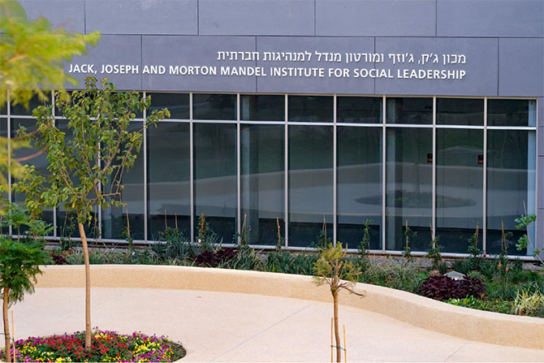
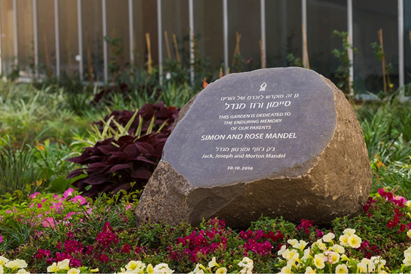

In a festive ceremony, the new home of the Jack, Joseph and Morton Mandel Institute for Social Leadership was dedicated at Ben-Gurion University of the Negev on October 30, 2016. The ceremony was held in the beautiful Simon and Rose Mandel Garden, which extends from the new building to Ben-Gurion University’s Guilford Glazer Faculty of Business and Management.
Left to Right: Prof. Oded Lowengart, Mayor Ruvik Danilovich, Mr. Morton L. Mandel, Prof. Rivka Carmi
(Photo: Danni Machlis, Courtesy of Ben-Gurion University)
(Photo: Danni Machlis, Courtesy of Ben-Gurion University)
Dedicated to strengthening Israel through the advancement of the third sector, the Jack, Joseph and Morton Mandel Institute for Social Leadership is a unique environment where students and faculty acquire management knowledge and broaden their research in the area of social responsibility. The Institute includes the Mandel Social Leadership MBA Program, a unique program that combines core courses in business administration with social leadership studies, and conducts executive education programs for seasoned professionals who have many years of managerial experience in the nonprofit world. It also houses the Israeli Center for Third Sector Research, which conducts research, engages in policy analysis, and serves as a resource on Israel’s third sector.
Speakers at the ceremony included
Mr. Morton L. Mandel, chairman and CEO of the Mandel Foundation;
Professor Rivka Carmi, president of Ben-Gurion University;
Mr. Ruvik Danilovich, mayor of Beer Sheva; and
Professor Oded Lowengart, dean of the Guilford Glazer Faculty of Business and Management.
Also in attendance were
Prof. Jehuda Reinharz, president of the Mandel Foundation;
Mr. Stephen Hoffman, vice chairman of the Mandel Foundation;
Ms. Annette Hochstein, president emeritus of the Mandel Foundation–Israel;
Mr. Moshe Vigdor, director general of the Mandel Foundation-Israel; and
Professor Amos Drori, former vice president of Ben-Gurion University.

The Jack, Joseph and Morton Mandel Institute for Social Leadership (Photo: Danni Machlis, Courtesy of Ben-Gurion University)
“It is all about people,” said
Ben-Gurion University President Rivka Carmi. “This is not only the name of the book written by Mort Mandel. It is his managerial skills, and style, the way he chooses his partners and friends, his way of life.” She thanked the Mandel Foundation Chairman for his partnership and friendship, stating “your generosity, but moreover, your wise guidance, and clear insights… are a once in a lifetime kind of experience for me, an incredible, outstanding inspiration.”
Extolling Mr. Mandel for his outstanding contribution to the city of Beer Sheva,
Beer Sheva Mayor Ruvik Danilovich said: “It’s symbolic that we are inaugurating this building at Ben-Gurion University, right next to Ben-Gurion Boulevard here in Beer Sheva. There are no greater partners in the vision for Beer Sheva than Ben-Gurion and Mort Mandel.” Turning to the students of the Institute, he added: “To be a graduate of this program means that there are high expectations of you to take charge and to do something. Something for the good of the city, something for the good of the country, something for the good of Israeli society, something for the good of the world.”
“This is a very wonderful moment for me,” said
Mandel Foundation Chairman Morton L. Mandel in response. “I’m thanking you because what you are doing is making my dream come true.”
Located on the Western edge of the University’s campus, the beautiful new building was designed by Plesner Architects, and combines functionality with aesthetics. Its proximity to the public housing projects of the Dalet neighborhood of Beer Sheva is not coincidental; rather, it aims to strengthen the connection between academic studies and the needs of the field.

The Simon and Rose Mandel Garden(Photo: Danni Machlis, Courtesy of Ben-Gurion University)
Additional highlights of the event included the inauguration of the Simon and Rose Mandel Garden, named after the parents of Jack, Joseph, and Morton Mandel; a ribbon cutting ceremony, the presentation of the key to the building to Mr. Morton Mandel, and a ceremony in which a mezuzah was affixed to the new building.
Prior to the dedication of the building and the garden, a time capsule with documentation of joint endeavors of the Mandel Foundation and Ben-Gurion University of the Negev was stored in the building. The time capsule will be opened in 2066.
The inauguration was followed by a graduation ceremony for the students of the third graduating class of the Mandel Social MBA Program, who have already begun to lead social initiatives in the Negev.
{kind=link}
{kind=link}
{kind=link}